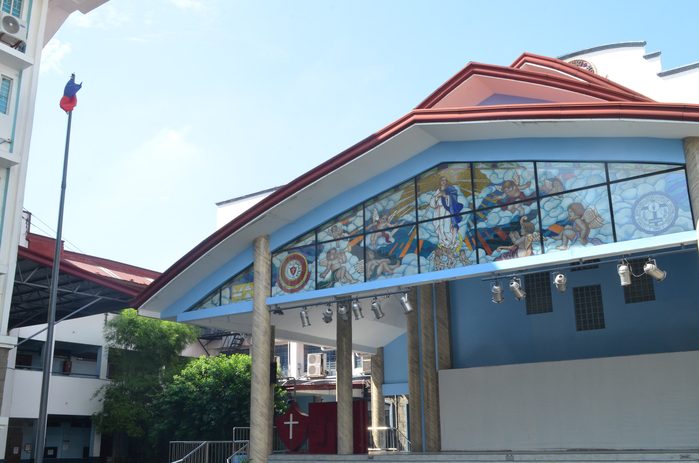

Receiving Applications
Bringing applications together to make the hiring process easier.

Official Hiring PortalWelcome to PCC RecruitHub! The official Job Applicant Management System of Pasig Catholic College. This platform is designed to make hiring easier from receiving applications to final selection.
Apply Now!The Platform
It keeps all information in one place for HR staff to efficiently track candidates, manage interviews, and find the best individuals to join our growing PCC community.
Core Features
Bringing applications together to make the hiring process easier.
Keep candidate information in one place, track applicants, and manage interviews.
Find the best individuals to join our growing PCC community.